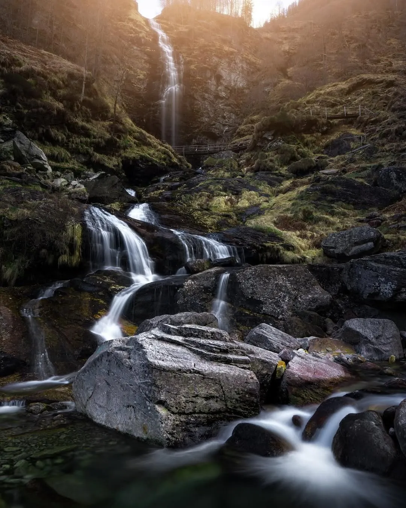
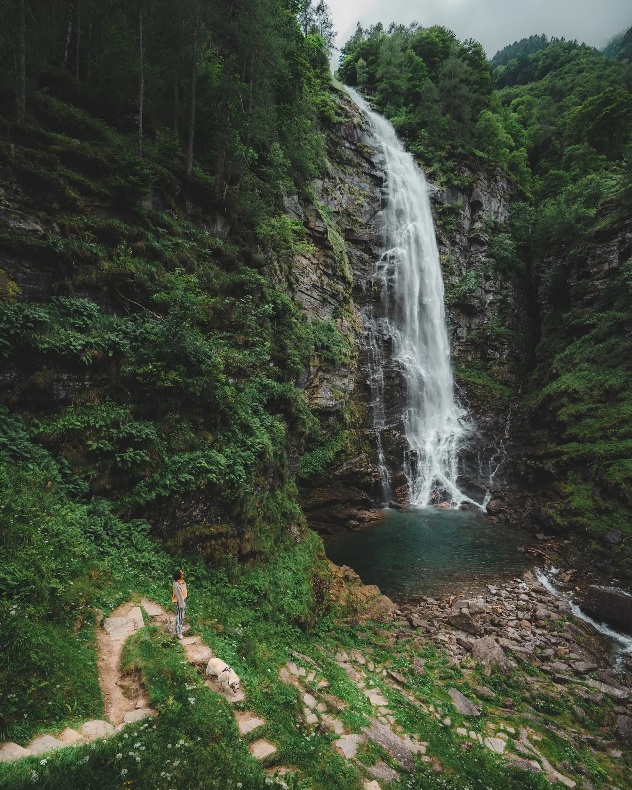

1 / 2 Photo · @kalapascalA FREEZING DIP UNDER A WATERFALL
Cascata La Froda
A tall waterfall above Sonogno with a plunge pool cold enough to wake the dead. Jumping in is half the experience.
RegionValle Verzasca
AccessDrive + short hike
EffortEasy
Best lightCloudy